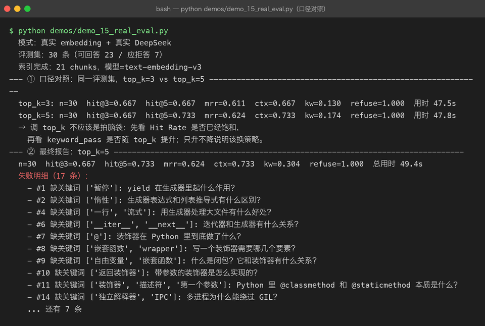
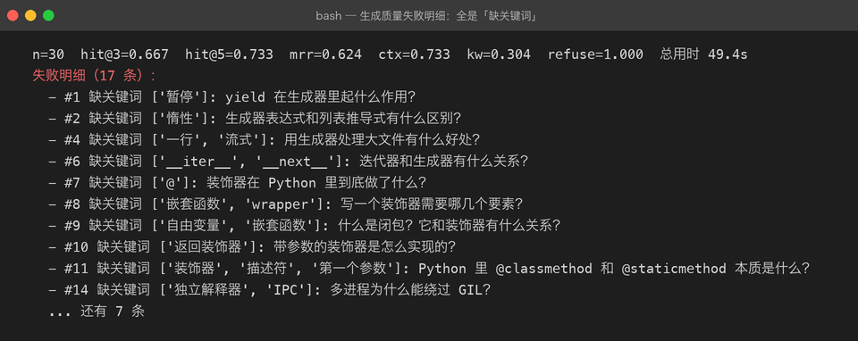
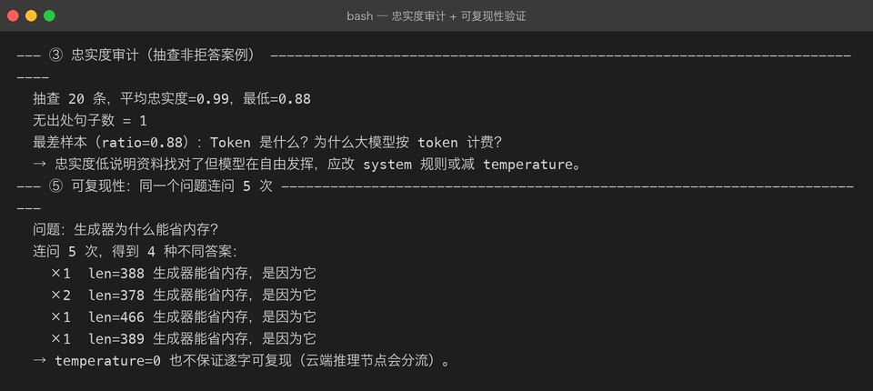

Milestone 14：真实 RAG 评估（30 条 EvalCase：Hit Rate / MRR / 忠实度）
到 13 章为止，RAG Web API 已经能跑。但一个没人评测过的 RAG 系统跟闭着眼炼丹没有本质区别。这一章用手写 30 条 EvalCase，在真实 embedding + 真实 DeepSeek 上跑一遍，看看哪一段链路最拉胯。
1. 目标与评测集
评估要解决的不是「分数高不高」，而是：
- 检索段：正确文档有没有被召回（Hit Rate@k / MRR）
- 上下文段：正确文档有没有被装进最终 prompt（ctx hit rate）
- 生成段：答案是否忠实于资料，是否该拒答的没有硬答（keyword / refusal / 忠实度）
三段指标解耦之后，优化才有方向：
- Hit Rate 低 → 换 embedding / 调 chunk / 加 rerank，改 prompt 没用。
- Hit Rate 高但答案错 → 资料找对了，模型在自由发挥，改 system 规则 / 降 temperature。
- 拒答判错 → 调整拒绝话术识别或提高检索闸门的
min_score。
1.1 data/eval_cases.json
30 条手写案例，覆盖仓库里 6 份语料：
| expected_source | 数量 | 说明 |
|---|---|---|
| python-generators.md | 7 | 可回答：yield、惰性、生成器表达式 |
| python-decorators.md | 5 | 可回答：@、闭包、wrapper |
| python-gil.md | 4 | 可回答：GIL、多线程、多进程 |
| llm-tokenization.md | 3 | 可回答：token、字符换算 |
| llm-sampling.txt | 2 | 可回答：temperature、贪心采样 |
| llm-retrieval.md | 2 | 可回答：向量检索 vs 关键词检索 |
| not-in-kb.md | 7 | 应拒答：知识库里没有的问题 |
每条案例的「答案」不是人工写的。我们只看：
- 正确文档有没有出现在 top_k 里（
expected_source） - 答案里有没有出现几个关键信息（
expected_keywords） - 没有资料的问题有没有成功拒答（
should_refuse=True）
这是 10 章讲过的「黄金标准不依赖人工答案」原则。
1.2 demos/demo_15_real_eval.py
demo 分五节：
- 口径对照：同一评测集，top_k=3 vs top_k=5。
- 最终报告：固定 top_k=5 出完整 EvalReport。
- 忠实度审计：抽查非拒答案例，用
check_answer_faithfulness()逐句核对。 - 可复现性：同一个问题连问 5 次，验证 temperature=0 是否逐字稳定。
- 口径纪律：评测集、评估函数、指标口径三固定。
报告会落盘到 reports/eval_report.json，保证前后对比是同一份口径。
2. 三段式指标的真实数值
运行环境：
- embedding：DashScope text-embedding-v3，21 chunks
- LLM：DeepSeek Chat，temperature=0
- 评测集：30 条（可回答 23 / 应拒答 7）
2.1 口径对照：top_k=3 vs top_k=5

关键数字：
| 指标 | top_k=3 | top_k=5 | 含义 |
|---|---|---|---|
| hit@3 | 0.667 | 0.667 | 正确文档进入前 3 的比例 |
| hit@5 | 0.667 | 0.733 | 正确文档进入前 5 的比例 |
| mrr | 0.611 | 0.624 | 正确文档平均排名的倒数 |
| ctx | 0.667 | 0.733 | 正确文档被装进 prompt 的比例 |
| refuse | 1.000 | 1.000 | 应拒答案例成功拒答的比例 |
结论：
- top_k 从 3 提到 5，检索类指标（hit / ctx / mrr）稳定提升，说明第 4/5 位确实捞进了更多正确文档。
- 但 hit@3 纹丝不动，说明模型排序质量没变好：正确文档只是从「第 4/5 位」挪到了「被召回」，并没有被推到更前面。
- 如果你的目标是 hit@3，单纯加
top_k没用，该换的是 embedding 或 rerank。
2.2 生成质量：为什么 keyword_pass 这么低
上图中最终报告的 kw=0.304，失败明细里 17 条全是「缺关键词」。

但这不是模型在胡说——检索类指标 0.667/0.733 说明资料找对了。真正原因是：
keyword_pass要求答案里原样出现预设关键词。真实 LLM 会用同义词、换一种说法，仍然正确，但触发不了关键词匹配。
例如：
- 预设关键词：
惰性；模型回答：按需计算。 - 预设关键词：
暂停；模型回答：挂起。
所以 keyword_pass 只能当保守下界，不能直接当正确率。
2.3 忠实度审计：抽查 20 条

- 平均忠实度 0.99，最低 0.88
- 20 条里只有 1 句找不到出处
- 最差样本：
Token 是什么？为什么大模型按 token 计费？
这说明：资料找对了，模型基本不会瞎编。真正需要优化的是召回率，而不是生成规则。
2.4 可复现性：同一问题连问 5 次
上图中「连问 5 次，得到 4 种不同答案」，长度分别是 388 / 378 / 466 / 389。
即使 temperature=0，云端推理节点也会分流，不保证逐字可复现。这带来的工程结论是：
- keyword_pass 不适合当 CI 回归门槛：今天 0.30，明天可能 0.35，不一定代表系统变好。
- 检索类指标（hit / ctx / mrr）才适合当回归门槛：它们只跟 embedding + 索引有关，同一批文档跑出来的结果完全一致。
3. 代码关键点
3.1 evaluate() 的拒答口径必须共用 pipeline 的判据
13 章把 RAGAnswer.refused 从精确字符串匹配改成了关键词命中（REFUSAL_MARKERS）。evaluate() 也必须复用 answer.refused，否则同一套拒答答案会出现两套结果。
if case.should_refuse:
if answer.refused: # ← 用 pipeline 已经定义好的判据
ref_pass += 1
else:
failed.append(...)如果这里写死 "没有相关资料" in answer.answer，真实模型回一句「资料中没有相关内容。」就会被漏判。
3.2 忠实度审计用 system_prompt 当参考资料
check_answer_faithfulness() 复用 RAGAnswer 留档的 system_prompt：
def check_answer_faithfulness(answer, **kw):
return check_faithfulness(answer.answer, answer.system_prompt, **kw)这样审的就是「模型实际看到的那一段资料」，而不是索引里的全部 chunk，口径更干净。
4. 坑清单
坑 1：只看 keyword_pass 会误判系统好坏
keyword_pass 低 = 检索错了吗？不一定。这里检索类指标 0.667，模型只是在换说法。把 keyword_pass 当最终指标，会白白去调 prompt。
修法：把 keyword_pass 当「信号」；下结论先看 hit / ctx / mrr，再用忠实度做定性复核。
坑 2：temperature=0 也不保证可复现
DeepSeek 等大型云服务即使 temperature=0，也可能因为负载均衡到不同节点而返回不同文本。实测同一问题 5 次，4 种答案。
修法：
- 评估时至少跑 3 次取平均，或者只看检索类指标。
- 不要把 keyword_pass 设成 hard gate。
- 如果需要严格可复现，考虑本地 vLLM（见 04 章）。
坑 3：top_k 提升不一定改善答案质量
top_k=3→5 让 hit@5 和 ctx 提升了，但 hit@3 没变。这意味着：
- 只是召回范围变宽了，排序能力没提升。
- 想提升 hit@3，该换 embedding 模型或加 rerank，而不是继续加大 top_k。
坑 4：评测集和评估函数必须三固定
前后对比只允许「同评测集、同评估函数、同指标口径」。一旦悄悄改评测集，分数再高也没意义。
5. 自检清单
- [ ] 能解释 Hit Rate@3 / Hit Rate@5 / MRR 分别衡量什么
- [ ] 能说明为什么 keyword_pass 低不代表系统差
- [ ] 能解释为什么 temperature=0 的 API 调用仍可能返回不同答案
- [ ] 能指出 top_k=3 到 top_k=5 的实验说明了什么
- [ ] 知道忠实度审计和关键词命中率的适用场景区别
- [ ] 能写一条 EvalCase，并知道拒答案例的 expected_source 该怎么填
上一章：13-fastapi-web-api.md —— FastAPI Web API（SSE 流式）
回到项目主页：../README.md